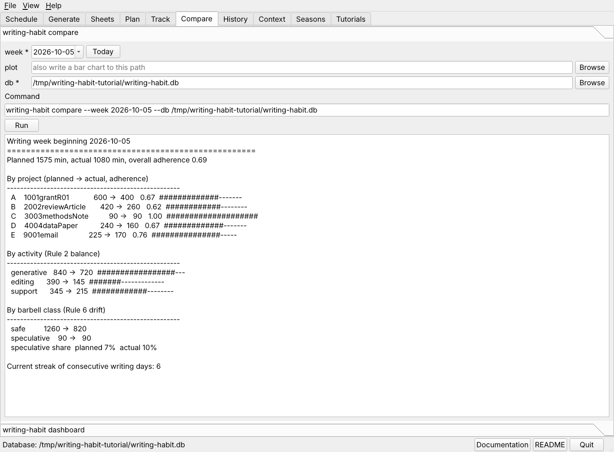

The compare report sets the planned minutes of a week beside the minutes you worked. Run it any day of the week to see where you stand.

The Compare tab with the report for the practice week.
week.png. The chart opens in the Preview pane. The chart needs matplotlib, which pip install "writing-habit[plot]" adds.writing-habit compare --week 2026-10-05 --db ~/org/writing-habit.db writing-habit compare --week 2026-10-05 --db ~/org/writing-habit.db --plot week.png
| Section | Question it answers |
|---|---|
| Overall adherence | What share of the planned minutes did I work? |
| By project | Which projects got their time and which were starved? A value above 1.00 means more time than planned. |
| By activity | Did generative writing give way to easier editing or support? |
| By barbell class | Did the risky projects keep their share, or were they the first to go? |
| Streak | How many days in a row have I written? |
A project that shows planned minutes and an actual of zero was either not worked or not matched by the sync. The sync report says which.
Next, write the dashboard.